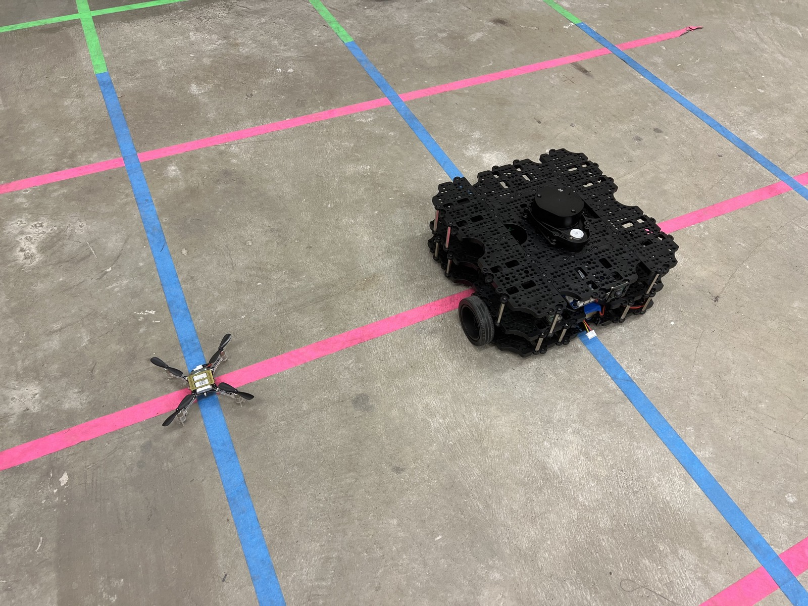
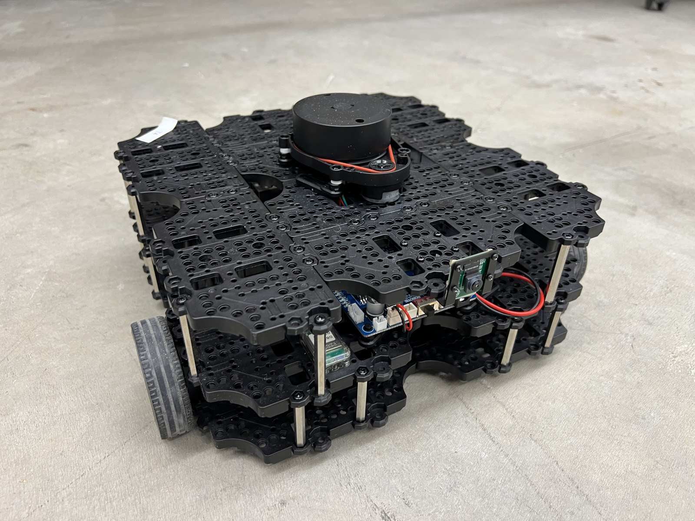
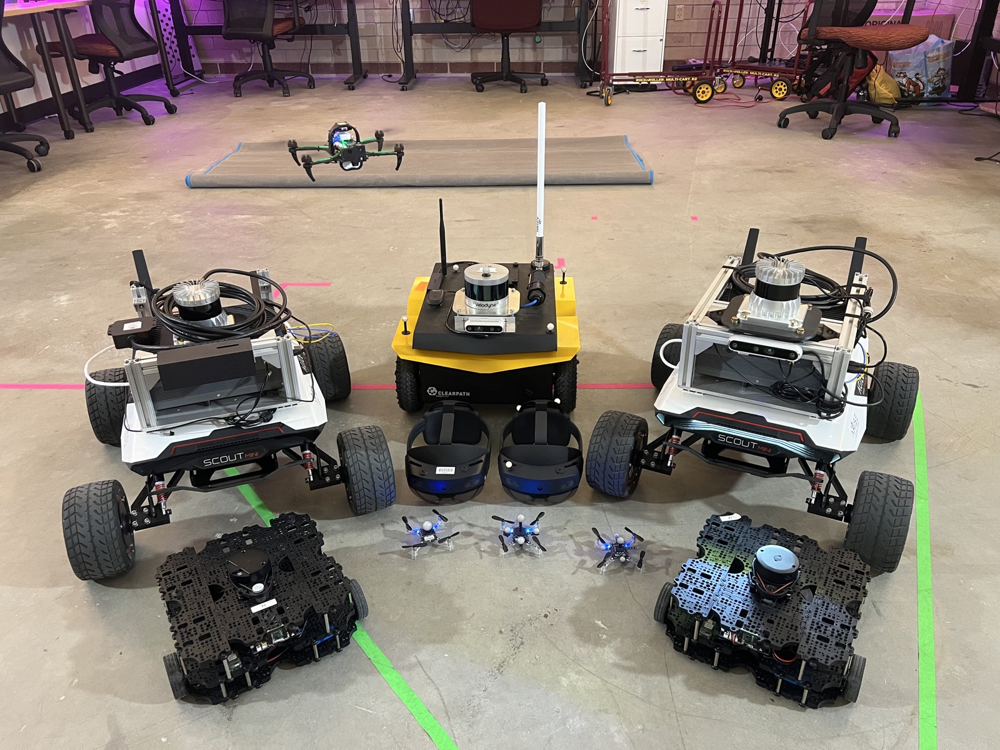
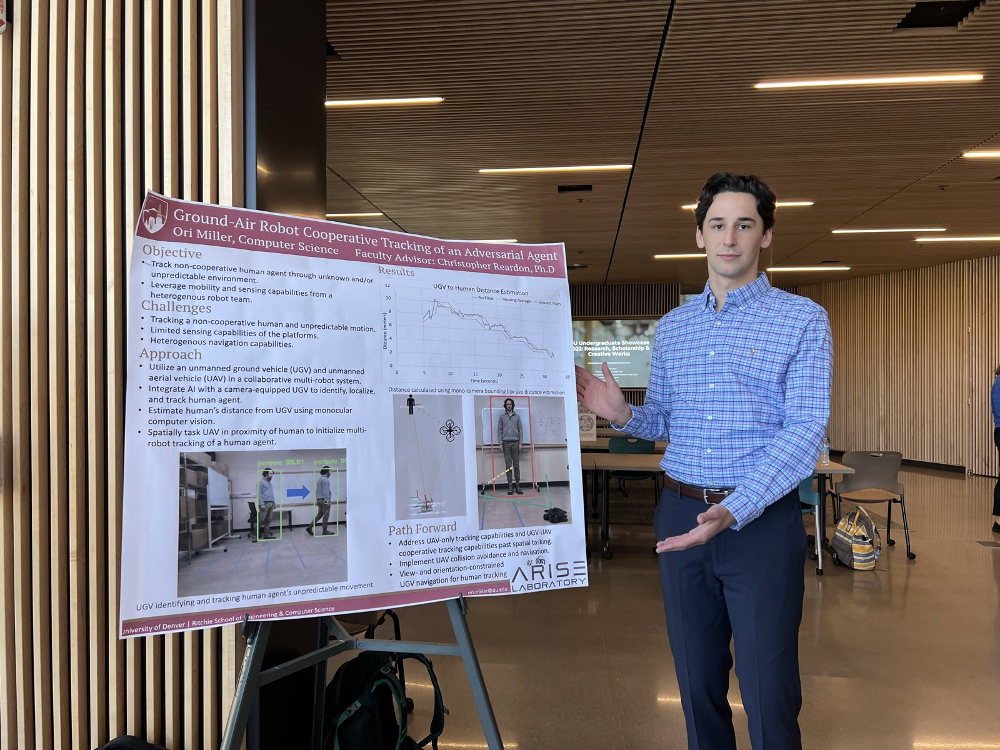

Thesis, Illustrated
A slow ground robot that thinks deeply. A fast little drone that sees everything. My master's research put them on the same team — and pitted a hand-built forecasting algorithm against reinforcement learning to find out which one keeps up with a person best.
01 · The Problem
A robot that can autonomously follow a person is a building block for a lot of real missions: hauling gear for a search-and-rescue team, assisting patients, carrying supplies for soldiers, or providing social assistance.
Most existing systems quietly assume the person will cooperate: walk at robot speed, stay in the open, glance back to make sure their robot buddy is keeping up. In high-stakes settings, nobody has time for that. The person moves how they move — and the robot has to deal with three hard constraints:
The core failure mode: the moment the person rounds a corner, a single ground robot is blind — and it's already slower than they are.
Indoors — or under a roof line or tree cover — you can't just fly a camera high above the scene. At low altitude, walls and clutter constantly break the robot's view of the person.
The robot's top speed is the same order of magnitude as the person's. There's no catching up after a mistake, so every navigation decision has to be timely and correct.
The robots get no map, no planned route, and no model of the person — nothing but a bound on how fast they could possibly move.
02 · The Idea
No single robot solves all three constraints at once. So the thesis pairs two robots whose strengths are exactly each other's weaknesses, plus the person they're trying to keep up with:
Ground robot · UGV
Slow but capable — carries the payload, the sensors, and the compute. Its job: physically reach the person's position.
Micro-drone · UAV
Fast but simple — little compute, locked to one low altitude. Its job: keep the person in view and report where they are.
Person
Walks their own path to their own destination — faster than the ground robot, with zero obligation to cooperate.
Max velocities: UGV < person < UAV. The drone can always keep up but can't act on what it sees; the ground robot can act but can't keep up. Teamwork is the only way through.
The drone becomes the ground robot's eyes around the corner: it races to wherever it can see the person and streams their position, while the ground robot uses that feed to plan the smartest possible route — even a route that temporarily gives up its own view.
03 · Three Strategies
The heart of the thesis is a bake-off between three motion strategies — a hand-engineered forecaster, a learned multi-agent policy, and a deliberately simple baseline.
FORWARD-PF (Forecasting Optimization of Robotic Way-point Assignment for Robust and Dynamic Person-Following) treats the problem like a chess player thinking one move ahead:
Fit a third-degree polynomial to the person's recent positions — a smooth curve describing where they've been heading.
Extend the curve a few seconds into the future, then scatter Gaussian samples around each predicted point — a cloud of "places they might plausibly be."
Lay a grid of candidate goal locations around the person. Score each one twice: for the follower, closeness to the predicted position; for the observer, how many predicted points it can see (line-of-sight), minus travel cost.
The follower gets the best proximity cell, the observer the best visibility cell — unless the spot each is already standing on scores higher, in which case: don't move. Repeat every cycle.
Every cycle, a grid of candidate goals is scored around the person. Green cells promise proximity or a clear view of the predicted motion cloud; the best cell for each robot becomes its next waypoint.
FORWARD-PF running in simulation: candidate goals colored from green (best) to red (worst), the blue circle marking the selected goal as the target moves.
The learned approach uses MADDPG — Multi-Agent Deep Deterministic Policy Gradient — with centralized training and decentralized execution. Three agents train together in a simple 2D particle world (PettingZoo's Multi-Particle Environment): a target that learns to evade, a follower rewarded for closing distance, and an observer rewarded for keeping line-of-sight, all penalized for collisions.
The catch: policies learn in a flat world of frictionless holonomic particles, then must drive a real differential-drive robot through 3D clutter. Bridging that gap — smoothing discrete actions, simplifying observations, rescaling coordinates — was half the battle.
Getting the trained model onto actual robot platforms took a pipeline of adaptations: averaging discrete actions into continuous velocity commands, adding a local planner to catch collisions the policy never saw in training, and segmenting the observation space into fixed regions so the model tolerates any number of obstacles.
The baseline is a single ground robot doing the obvious thing: keep the person's bounding box centered in the camera and drive forward. No drone, no prediction, no planning. It's fast, cheap, and — as the experiments show — it works right up until the person does anything interesting.
Point-and-shoot in action: pure reactive pursuit. Great on straight lines; helpless the moment line-of-sight breaks.
04 · The Gauntlet
All three strategies ran in a Unity-based ROS simulation built on an Army Research Laboratory autonomy stack (300+ packages — lidar and vision perception, mapping, metric and symbolic planning). Across three different areas, the simulated person walked nine predefined paths of increasing tortuosity — from gentle easy routes to hard, corner-heavy gauntlets. The robots start together; the clock starts when the person first enters their view.
05 · Results
Point-and-shoot only survives the easy routes. MARL holds through medium difficulty but collides on hard paths. FORWARD-PF completes every path, with near-perfect success even on the hardest ones.
9/9
paths completed by FORWARD-PF — the only method to finish them all
1.95×
faster arrival at the target with FORWARD-PF vs. the learned MARL policy
≥71%
time-in-view in every successful two-robot run — the drone earns its keep
The visibility numbers tell the underlying story. When the drone keeps the person in sight, the ground robot always knows where to go; every MARL failure came on runs where visibility collapsed below 20%.
| Time in view | P1 | P2 | P3 | P4 | P5 | P6 | P7 | P8 | P9 |
|---|---|---|---|---|---|---|---|---|---|
| Point-and-Shoot | 0.61 | 0.85* | 0.48* | 0.51 | 0.35* | 0.38* | 0.69 | 0.24* | 0.34* |
| MARL | 1.00 | 0.71 | 1.00 | 1.00 | 1.00 | 0.14* | 1.00 | 0.96 | 0.20* |
| FORWARD-PF | 0.98 | 1.00 | 1.00 | 1.00 | 1.00 | 0.98 | 1.00 | 0.97 | 0.72 |
Fraction of each run the person stayed visible to the robot team, per path. * marks failed runs.
Something emerged that wasn't programmed in. Because the drone keeps reporting the person's position, the slow ground robot doesn't have to retrace the person's winding path — it can cut the corner and plan the shortest route to wherever they are now. Both two-robot methods discovered this behavior on their own, and it replicated on real hardware.
Emergent efficiency: with the drone maintaining eyes-on, the ground robot plans point-to-point instead of playing follow-the-leader — covering less distance than the person did.
06 · Off the Screen
To prove the approach isn't a simulation artifact, FORWARD-PF ran on real hardware: a Clearpath Jackal ground robot paired with a palm-sized Crazyflie quadrotor, localized by an OptiTrack motion-capture system in the lab. The shortcut behavior from simulation showed up in the real world too.
The heuristic method running live: the Jackal works its way around a cardboard obstacle wall to reach the person, with the OptiTrack rig watching from above.
The same run from inside the robot's head: RViz shows the live occupancy grid, the tracked target, and the goals FORWARD-PF assigns in real time.




The ground robot spatially tasking the Crazyflie — the observer lifting off to go find its person.
What the robot sees: the live RViz view during a real person-following run.
07 · Takeaways
The shortcut behavior wasn't designed — it fell out of splitting "see the person" and "reach the person" across two platforms. The whole was genuinely more than the sum.
FORWARD-PF outperformed the learned policy on every metric that mattered, with far less development pain. RL showed real promise — but sim-to-real transfer, not learning, was the bottleneck.
Every failure across every method traces back to losing sight of the person. Quantifying the minimum visibility a team needs is the next research question this work opens.